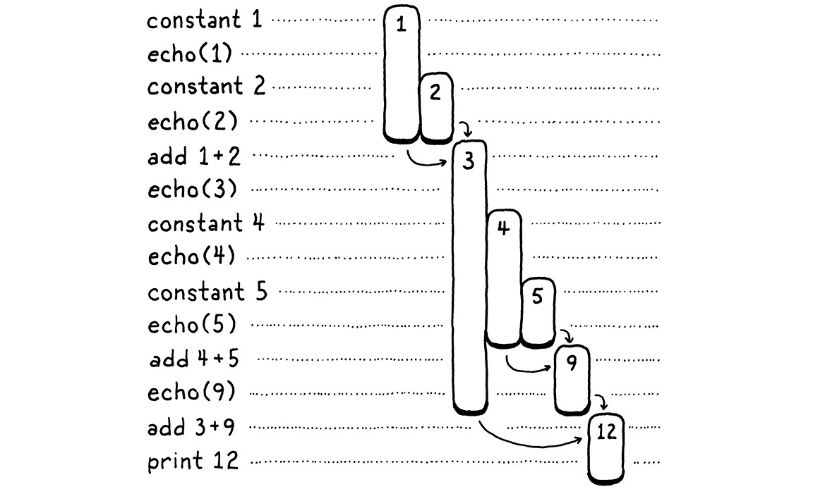

A Virtual Machine
Magicians protect their secrets not because the secrets are large and important, but because they are so small and trivial. The wonderful effects created on stage are often the result of a secret so absurd that the magician would be embarrassed to admit that that was how it was done.
Christopher Priest, The Prestige
We’ve spent a lot of time talking about how to represent a program as a sequence of bytecode instructions, but it feels like learning biology using only stuffed, dead animals. We know what instructions are in theory, but we’ve never seen them in action, so it’s hard to really understand what they do. It would be hard to write a compiler that outputs bytecode when we don’t have a good understanding of how that bytecode behaves.
So, before we go and build the front end of our new interpreter, we will begin with the back end—the virtual machine that executes instructions. It breathes life into the bytecode. Watching the instructions prance around gives us a clearer picture of how a compiler might translate the user’s source code into a series of them.
15 . 1An Instruction Execution Machine
The virtual machine is one part of our interpreter’s internal architecture. You hand it a chunk of code—literally a Chunk—and it runs it. The code and data structures for the VM reside in a new module.
create new file
#ifndef clox_vm_h #define clox_vm_h #include "chunk.h" typedef struct { Chunk* chunk; } VM; void initVM(); void freeVM(); #endif
As usual, we start simple. The VM will gradually acquire a whole pile of state it needs to keep track of, so we define a struct now to stuff that all in. Currently, all we store is the chunk that it executes.
Like we do with most of the data structures we create, we also define functions to create and tear down a VM. Here’s the implementation:
create new file
#include "common.h" #include "vm.h" VM vm; void initVM() { } void freeVM() { }
OK, calling those functions “implementations” is a stretch. We don’t have any interesting state to initialize or free yet, so the functions are empty. Trust me, we’ll get there.
The slightly more interesting line here is that declaration of vm. This module
is eventually going to have a slew of functions and it would be a chore to pass
around a pointer to the VM to all of them. Instead, we declare a single global
VM object. We need only one anyway, and this keeps the code in the book a little
lighter on the page.
Before we start pumping fun code into our VM, let’s go ahead and wire it up to the interpreter’s main entrypoint.
int main(int argc, const char* argv[]) {
in main()
initVM();
Chunk chunk;
We spin up the VM when the interpreter first starts. Then when we’re about to exit, we wind it down.
disassembleChunk(&chunk, "test chunk");
in main()
freeVM();
freeChunk(&chunk);
One last ceremonial obligation:
#include "debug.h"
#include "vm.h"
int main(int argc, const char* argv[]) {
Now when you run clox, it starts up the VM before it creates that hand-authored chunk from the last chapter. The VM is ready and waiting, so let’s teach it to do something.
15 . 1 . 1Executing instructions
The VM springs into action when we command it to interpret a chunk of bytecode.
disassembleChunk(&chunk, "test chunk");
in main()
interpret(&chunk);
freeVM();
This function is the main entrypoint into the VM. It’s declared like so:
void freeVM();
add after freeVM()
InterpretResult interpret(Chunk* chunk);
#endif
The VM runs the chunk and then responds with a value from this enum:
} VM;
add after struct VM
typedef enum { INTERPRET_OK, INTERPRET_COMPILE_ERROR, INTERPRET_RUNTIME_ERROR } InterpretResult;
void initVM(); void freeVM();
We aren’t using the result yet, but when we have a compiler that reports static errors and a VM that detects runtime errors, the interpreter will use this to know how to set the exit code of the process.
We’re inching towards some actual implementation.
add after freeVM()
InterpretResult interpret(Chunk* chunk) { vm.chunk = chunk; vm.ip = vm.chunk->code; return run(); }
First, we store the chunk being executed in the VM. Then we call run(), an
internal helper function that actually runs the bytecode instructions. Between
those two parts is an intriguing line. What is this ip business?
As the VM works its way through the bytecode, it keeps track of where it is—the location of the instruction currently being executed. We don’t use a local variable inside run() for this because eventually
other functions will need to access it. Instead, we store it as a field in VM.
typedef struct {
Chunk* chunk;
in struct VM
uint8_t* ip;
} VM;
Its type is a byte pointer. We use an actual real C pointer pointing right into the middle of the bytecode array instead of something like an integer index because it’s faster to dereference a pointer than look up an element in an array by index.
The name “IP” is traditional, and—unlike many traditional names in CS—actually makes sense: it’s an instruction pointer. Almost every instruction set in the world, real and virtual, has a register or variable like this.
We initialize ip by pointing it at the first byte of code in the chunk. We
haven’t executed that instruction yet, so ip points to the instruction about
to be executed. This will be true during the entire time the VM is running: the
IP always points to the next instruction, not the one currently being handled.
The real fun happens in run().
add after freeVM()
static InterpretResult run() { #define READ_BYTE() (*vm.ip++) for (;;) { uint8_t instruction; switch (instruction = READ_BYTE()) { case OP_RETURN: { return INTERPRET_OK; } } } #undef READ_BYTE }
This is the single most important function in all
of clox, by far. When the interpreter executes a user’s program, it will spend
something like 90% of its time inside run(). It is the beating heart of the
VM.
Despite that dramatic intro, it’s conceptually pretty simple. We have an outer loop that goes and goes. Each turn through that loop, we read and execute a single bytecode instruction.
To process an instruction, we first figure out what kind of instruction we’re
dealing with. The READ_BYTE macro reads the byte currently pointed at by ip
and then advances the instruction pointer. The first
byte of any instruction is the opcode. Given a numeric opcode, we need to get to
the right C code that implements that instruction’s semantics. This process is
called decoding or dispatching the instruction.
We do that process for every single instruction, every single time one is executed, so this is the most performance critical part of the entire virtual machine. Programming language lore is filled with clever techniques to do bytecode dispatch efficiently, going all the way back to the early days of computers.
Alas, the fastest solutions require either non-standard extensions to C, or
handwritten assembly code. For clox, we’ll keep it simple. Just like our
disassembler, we have a single giant switch statement with a case for each
opcode. The body of each case implements that opcode’s behavior.
So far, we handle only a single instruction, OP_RETURN, and the only thing it
does is exit the loop entirely. Eventually, that instruction will be used to
return from the current Lox function, but we don’t have functions yet, so we’ll
repurpose it temporarily to end the execution.
Let’s go ahead and support our one other instruction.
switch (instruction = READ_BYTE()) {
in run()
case OP_CONSTANT: { Value constant = READ_CONSTANT(); printValue(constant); printf("\n"); break; }
case OP_RETURN: {
We don’t have enough machinery in place yet to do anything useful with a
constant. For now, we’ll just print it out so we interpreter hackers can see
what’s going on inside our VM. That call to printf() necessitates an include.
add to top of file
#include <stdio.h>
#include "common.h"
We also have a new macro to define.
#define READ_BYTE() (*vm.ip++)
in run()
#define READ_CONSTANT() (vm.chunk->constants.values[READ_BYTE()])
for (;;) {
READ_CONSTANT() reads the next byte from the bytecode, treats the resulting
number as an index, and looks up the corresponding Value in the chunk’s constant
table. In later chapters, we’ll add a few more instructions with operands that
refer to constants, so we’re setting up this helper macro now.
Like the previous READ_BYTE macro, READ_CONSTANT is only used inside
run(). To make that scoping more explicit, the macro definitions themselves
are confined to that function. We define them at the
beginning and—because we care—undefine them at the end.
#undef READ_BYTE
in run()
#undef READ_CONSTANT
}
15 . 1 . 2Execution tracing
If you run clox now, it executes the chunk we hand-authored in the last chapter
and spits out 1.2 to your terminal. We can see that it’s working, but that’s
only because our implementation of OP_CONSTANT has temporary code to log the
value. Once that instruction is doing what it’s supposed to do and plumbing that
constant along to other operations that want to consume it, the VM will become a
black box. That makes our lives as VM implementers harder.
To help ourselves out, now is a good time to add some diagnostic logging to the VM like we did with chunks themselves. In fact, we’ll even reuse the same code. We don’t want this logging enabled all the time—it’s just for us VM hackers, not Lox users—so first we create a flag to hide it behind.
#include <stdint.h>
#define DEBUG_TRACE_EXECUTION
#endif
When this flag is defined, the VM disassembles and prints each instruction right before executing it. Where our previous disassembler walked an entire chunk once, statically, this disassembles instructions dynamically, on the fly.
for (;;) {
in run()
#ifdef DEBUG_TRACE_EXECUTION disassembleInstruction(vm.chunk, (int)(vm.ip - vm.chunk->code)); #endif
uint8_t instruction;
Since disassembleInstruction() takes an integer byte offset and we store the
current instruction reference as a direct pointer, we first do a little pointer
math to convert ip back to a relative offset from the beginning of the
bytecode. Then we disassemble the instruction that begins at that byte.
As ever, we need to bring in the declaration of the function before we can call it.
#include "common.h"
#include "debug.h"
#include "vm.h"
I know this code isn’t super impressive so far—it’s literally a switch
statement wrapped in a for loop but, believe it or not, this is one of the two
major components of our VM. With this, we can imperatively execute instructions.
Its simplicity is a virtue—the less work it does, the faster it can do it.
Contrast this with all of the complexity and overhead we had in jlox with the
Visitor pattern for walking the AST.
15 . 2A Value Stack Manipulator
In addition to imperative side effects, Lox has expressions that produce, modify, and consume values. Thus, our compiled bytecode needs a way to shuttle values around between the different instructions that need them. For example:
print 3 - 2;
We obviously need instructions for the constants 3 and 2, the print statement,
and the subtraction. But how does the subtraction instruction know that 3 is
the minuend and 2 is the subtrahend? How does the print
instruction know to print the result of that?
To put a finer point on it, look at this thing right here:
fun echo(n) { print n; return n; } print echo(echo(1) + echo(2)) + echo(echo(4) + echo(5));
I wrapped each subexpression in a call to echo() that prints and returns its
argument. That side effect means we can see the exact order of operations.
Don’t worry about the VM for a minute. Think about just the semantics of Lox
itself. The operands to an arithmetic operator obviously need to be evaluated
before we can perform the operation itself. (It’s pretty hard to add a + b if
you don’t know what a and b are.) Also, when we implemented expressions in
jlox, we decided that the left operand must be
evaluated before the right.
Here is the syntax tree for the print statement:

Given left-to-right evaluation, and the way the expressions are nested, any correct Lox implementation must print these numbers in this order:
1 // from echo(1) 2 // from echo(2) 3 // from echo(1 + 2) 4 // from echo(4) 5 // from echo(5) 9 // from echo(4 + 5) 12 // from print 3 + 9
Our old jlox interpreter accomplishes this by recursively traversing the AST. It does a postorder traversal. First it recurses down the left operand branch, then the right operand, then finally it evaluates the node itself.
After evaluating the left operand, jlox needs to store that result somewhere temporarily while it’s busy traversing down through the right operand tree. We use a local variable in Java for that. Our recursive tree-walk interpreter creates a unique Java call frame for each node being evaluated, so we could have as many of these local variables as we needed.
In clox, our run() function is not recursive—the nested expression tree is
flattened out into a linear series of instructions. We don’t have the luxury of
using C local variables, so how and where should we store these temporary
values? You can probably guess already, but I want to
really drill into this because it’s an aspect of programming that we take for
granted, but we rarely learn why computers are architected this way.
Let’s do a weird exercise. We’ll walk through the execution of the above program a step at a time:

On the left are the steps of code. On the right are the values we’re tracking. Each bar represents a number. It starts when the value is first produced—either a constant or the result of an addition. The length of the bar tracks when a previously produced value needs to be kept around, and it ends when that value finally gets consumed by an operation.
As you step through, you see values appear and then later get eaten. The longest-lived ones are the values produced from the left-hand side of an addition. Those stick around while we work through the right-hand operand expression.
In the above diagram, I gave each unique number its own visual column. Let’s be a little more parsimonious. Once a number is consumed, we allow its column to be reused for another later value. In other words, we take all of those gaps up there and fill them in, pushing in numbers from the right:

There’s some interesting stuff going on here. When we shift everything over, each number still manages to stay in a single column for its entire life. Also, there are no gaps left. In other words, whenever a number appears earlier than another, then it will live at least as long as that second one. The first number to appear is the last to be consumed. Hmm . . . last-in, first-out . . . why, that’s a stack!
In the second diagram, each time we introduce a number, we push it onto the stack from the right. When numbers are consumed, they are always popped off from rightmost to left.
Since the temporary values we need to track naturally have stack-like behavior, our VM will use a stack to manage them. When an instruction “produces” a value, it pushes it onto the stack. When it needs to consume one or more values, it gets them by popping them off the stack.
15 . 2 . 1The VM’s Stack
Maybe this doesn’t seem like a revelation, but I love stack-based VMs. When you first see a magic trick, it feels like something actually magical. But then you learn how it works—usually some mechanical gimmick or misdirection—and the sense of wonder evaporates. There are a couple of ideas in computer science where even after I pulled them apart and learned all the ins and outs, some of the initial sparkle remained. Stack-based VMs are one of those.
As you’ll see in this chapter, executing instructions in a stack-based VM is dead simple. In later chapters, you’ll also discover that compiling a source language to a stack-based instruction set is a piece of cake. And yet, this architecture is fast enough to be used by production language implementations. It almost feels like cheating at the programming language game.
Alrighty, it’s codin’ time! Here’s the stack:
typedef struct {
Chunk* chunk;
uint8_t* ip;
in struct VM
Value stack[STACK_MAX]; Value* stackTop;
} VM;
We implement the stack semantics ourselves on top of a raw C array. The bottom of the stack—the first value pushed and the last to be popped—is at element zero in the array, and later pushed values follow it. If we push the letters of “crepe”—my favorite stackable breakfast item—onto the stack, in order, the resulting C array looks like this:

Since the stack grows and shrinks as values are pushed and popped, we need to
track where the top of the stack is in the array. As with ip, we use a direct
pointer instead of an integer index since it’s faster to dereference the pointer
than calculate the offset from the index each time we need it.
The pointer points at the array element just past the element containing the top value on the stack. That seems a little odd, but almost every implementation does this. It means we can indicate that the stack is empty by pointing at element zero in the array.
If we pointed to the top element, then for an empty stack we’d need to point at element -1. That’s undefined in C. As we push values onto the stack . . .

. . . stackTop always points just past the last item.
I remember it like this: stackTop points to where the next value to be pushed
will go. The maximum number of values we can store on the stack (for now, at
least) is:
#include "chunk.h"
#define STACK_MAX 256
typedef struct {
Giving our VM a fixed stack size means it’s possible for some sequence of instructions to push too many values and run out of stack space—the classic “stack overflow”. We could grow the stack dynamically as needed, but for now we’ll keep it simple. Since VM uses Value, we need to include its declaration.
#include "chunk.h"
#include "value.h"
#define STACK_MAX 256
Now that VM has some interesting state, we get to initialize it.
void initVM() {
in initVM()
resetStack();
}
That uses this helper function:
add after variable vm
static void resetStack() { vm.stackTop = vm.stack; }
Since the stack array is declared directly inline in the VM struct, we don’t
need to allocate it. We don’t even need to clear the unused cells in the
array—we simply won’t access them until after values have been stored in
them. The only initialization we need is to set stackTop to point to the
beginning of the array to indicate that the stack is empty.
The stack protocol supports two operations:
InterpretResult interpret(Chunk* chunk);
add after interpret()
void push(Value value); Value pop();
#endif
You can push a new value onto the top of the stack, and you can pop the most recently pushed value back off. Here’s the first function:
add after freeVM()
void push(Value value) { *vm.stackTop = value; vm.stackTop++; }
If you’re rusty on your C pointer syntax and operations, this is a good warm-up.
The first line stores value in the array element at the top of the stack.
Remember, stackTop points just past the last used element, at the next
available one. This stores the value in that slot. Then we increment the pointer
itself to point to the next unused slot in the array now that the previous slot
is occupied.
Popping is the mirror image.
add after push()
Value pop() { vm.stackTop--; return *vm.stackTop; }
First, we move the stack pointer back to get to the most recent used slot in
the array. Then we look up the value at that index and return it. We don’t need
to explicitly “remove” it from the array—moving stackTop down is enough to
mark that slot as no longer in use.
15 . 2 . 2Stack tracing
We have a working stack, but it’s hard to see that it’s working. When we start implementing more complex instructions and compiling and running larger pieces of code, we’ll end up with a lot of values crammed into that array. It would make our lives as VM hackers easier if we had some visibility into the stack.
To that end, whenever we’re tracing execution, we’ll also show the current contents of the stack before we interpret each instruction.
#ifdef DEBUG_TRACE_EXECUTION
in run()
printf(" "); for (Value* slot = vm.stack; slot < vm.stackTop; slot++) { printf("[ "); printValue(*slot); printf(" ]"); } printf("\n");
disassembleInstruction(vm.chunk,
We loop, printing each value in the array, starting at the first (bottom of the stack) and ending when we reach the top. This lets us observe the effect of each instruction on the stack. The output is pretty verbose, but it’s useful when we’re surgically extracting a nasty bug from the bowels of the interpreter.
Stack in hand, let’s revisit our two instructions. First up:
case OP_CONSTANT: {
Value constant = READ_CONSTANT();
in run()
replace 2 lines
push(constant);
break;
In the last chapter, I was hand-wavey about how the OP_CONSTANT instruction
“loads” a constant. Now that we have a stack you know what it means to actually
produce a value: it gets pushed onto the stack.
case OP_RETURN: {
in run()
printValue(pop()); printf("\n");
return INTERPRET_OK;
Then we make OP_RETURN pop the stack and print the top value before exiting.
When we add support for real functions to clox, we’ll change this code. But, for
now, it gives us a way to get the VM executing simple instruction sequences and
displaying the result.
15 . 3An Arithmetic Calculator
The heart and soul of our VM are in place now. The bytecode loop dispatches and executes instructions. The stack grows and shrinks as values flow through it. The two halves work, but it’s hard to get a feel for how cleverly they interact with only the two rudimentary instructions we have so far. So let’s teach our interpreter to do arithmetic.
We’ll start with the simplest arithmetic operation, unary negation.
var a = 1.2; print -a; // -1.2.
The prefix - operator takes one operand, the value to negate. It produces a
single result. We aren’t fussing with a parser yet, but we can add the
bytecode instruction that the above syntax will compile to.
OP_CONSTANT,
in enum OpCode
OP_NEGATE,
OP_RETURN,
We execute it like so:
}
in run()
case OP_NEGATE: push(-pop()); break;
case OP_RETURN: {
The instruction needs a value to operate on, which it gets by popping from the stack. It negates that, then pushes the result back on for later instructions to use. Doesn’t get much easier than that. We can disassemble it too.
case OP_CONSTANT:
return constantInstruction("OP_CONSTANT", chunk, offset);
in disassembleInstruction()
case OP_NEGATE: return simpleInstruction("OP_NEGATE", offset);
case OP_RETURN:
And we can try it out in our test chunk.
writeChunk(&chunk, constant, 123);
in main()
writeChunk(&chunk, OP_NEGATE, 123);
writeChunk(&chunk, OP_RETURN, 123);
After loading the constant, but before returning, we execute the negate instruction. That replaces the constant on the stack with its negation. Then the return instruction prints that out:
-1.2
Magical!
15 . 3 . 1Binary operators
OK, unary operators aren’t that impressive. We still only ever have a single value on the stack. To really see some depth, we need binary operators. Lox has four binary arithmetic operators: addition, subtraction, multiplication, and division. We’ll go ahead and implement them all at the same time.
OP_CONSTANT,
in enum OpCode
OP_ADD, OP_SUBTRACT, OP_MULTIPLY, OP_DIVIDE,
OP_NEGATE,
Back in the bytecode loop, they are executed like this:
}
in run()
case OP_ADD: BINARY_OP(+); break; case OP_SUBTRACT: BINARY_OP(-); break; case OP_MULTIPLY: BINARY_OP(*); break; case OP_DIVIDE: BINARY_OP(/); break;
case OP_NEGATE: push(-pop()); break;
The only difference between these four instructions is which underlying C operator they ultimately use to combine the two operands. Surrounding that core arithmetic expression is some boilerplate code to pull values off the stack and push the result. When we later add dynamic typing, that boilerplate will grow. To avoid repeating that code four times, I wrapped it up in a macro.
#define READ_CONSTANT() (vm.chunk->constants.values[READ_BYTE()])
in run()
#define BINARY_OP(op) \ do { \ double b = pop(); \ double a = pop(); \ push(a op b); \ } while (false)
for (;;) {
I admit this is a fairly adventurous use of the C preprocessor. I hesitated to do this, but you’ll be glad in later chapters when we need to add the type checking for each operand and stuff. It would be a chore to walk you through the same code four times.
If you aren’t familiar with the trick already, that outer do while loop
probably looks really weird. This macro needs to expand to a series of
statements. To be careful macro authors, we want to ensure those statements all
end up in the same scope when the macro is expanded. Imagine if you defined:
#define WAKE_UP() makeCoffee(); drinkCoffee();
And then used it like:
if (morning) WAKE_UP();
The intent is to execute both statements of the macro body only if morning is
true. But it expands to:
if (morning) makeCoffee(); drinkCoffee();;
Oops. The if attaches only to the first statement. You might think you could
fix this using a block.
#define WAKE_UP() { makeCoffee(); drinkCoffee(); }
That’s better, but you still risk:
if (morning) WAKE_UP(); else sleepIn();
Now you get a compile error on the else because of that trailing ; after the
macro’s block. Using a do while loop in the macro looks funny, but it gives
you a way to contain multiple statements inside a block that also permits a
semicolon at the end.
Where were we? Right, so what the body of that macro does is straightforward. A binary operator takes two operands, so it pops twice. It performs the operation on those two values and then pushes the result.
Pay close attention to the order of the two pops. Note that we assign the
first popped operand to b, not a. It looks backwards. When the operands
themselves are calculated, the left is evaluated first, then the right. That
means the left operand gets pushed before the right operand. So the right
operand will be on top of the stack. Thus, the first value we pop is b.
For example, if we compile 3 - 1, the data flow between the instructions looks
like so:

As we did with the other macros inside run(), we clean up after ourselves at
the end of the function.
#undef READ_CONSTANT
in run()
#undef BINARY_OP
}
Last is disassembler support.
case OP_CONSTANT:
return constantInstruction("OP_CONSTANT", chunk, offset);
in disassembleInstruction()
case OP_ADD: return simpleInstruction("OP_ADD", offset); case OP_SUBTRACT: return simpleInstruction("OP_SUBTRACT", offset); case OP_MULTIPLY: return simpleInstruction("OP_MULTIPLY", offset); case OP_DIVIDE: return simpleInstruction("OP_DIVIDE", offset);
case OP_NEGATE:
The arithmetic instruction formats are simple, like OP_RETURN. Even though the
arithmetic operators take operands—which are found on the stack—the
arithmetic bytecode instructions do not.
Let’s put some of our new instructions through their paces by evaluating a larger expression:

Building on our existing example chunk, here’s the additional instructions we need to hand-compile that AST to bytecode.
int constant = addConstant(&chunk, 1.2); writeChunk(&chunk, OP_CONSTANT, 123); writeChunk(&chunk, constant, 123);
in main()
constant = addConstant(&chunk, 3.4); writeChunk(&chunk, OP_CONSTANT, 123); writeChunk(&chunk, constant, 123); writeChunk(&chunk, OP_ADD, 123); constant = addConstant(&chunk, 5.6); writeChunk(&chunk, OP_CONSTANT, 123); writeChunk(&chunk, constant, 123); writeChunk(&chunk, OP_DIVIDE, 123);
writeChunk(&chunk, OP_NEGATE, 123); writeChunk(&chunk, OP_RETURN, 123);
The addition goes first. The instruction for the left constant, 1.2, is already
there, so we add another for 3.4. Then we add those two using OP_ADD, leaving
it on the stack. That covers the left side of the division. Next we push the
5.6, and divide the result of the addition by it. Finally, we negate the result
of that.
Note how the output of the OP_ADD implicitly flows into being an operand of
OP_DIVIDE without either instruction being directly coupled to each other.
That’s the magic of the stack. It lets us freely compose instructions without
them needing any complexity or awareness of the data flow. The stack acts like a
shared workspace that they all read from and write to.
In this tiny example chunk, the stack still only gets two values tall, but when we start compiling Lox source to bytecode, we’ll have chunks that use much more of the stack. In the meantime, try playing around with this hand-authored chunk to calculate different nested arithmetic expressions and see how values flow through the instructions and stack.
You may as well get it out of your system now. This is the last chunk we’ll build by hand. When we next revisit bytecode, we will be writing a compiler to generate it for us.
Challenges
-
What bytecode instruction sequences would you generate for the following expressions:
1 * 2 + 3 1 + 2 * 3 3 - 2 - 1 1 + 2 * 3 - 4 / -5
(Remember that Lox does not have a syntax for negative number literals, so the
-5is negating the number 5.) -
If we really wanted a minimal instruction set, we could eliminate either
OP_NEGATEorOP_SUBTRACT. Show the bytecode instruction sequence you would generate for:4 - 3 * -2
First, without using
OP_NEGATE. Then, without usingOP_SUBTRACT.Given the above, do you think it makes sense to have both instructions? Why or why not? Are there any other redundant instructions you would consider including?
-
Our VM’s stack has a fixed size, and we don’t check if pushing a value overflows it. This means the wrong series of instructions could cause our interpreter to crash or go into undefined behavior. Avoid that by dynamically growing the stack as needed.
What are the costs and benefits of doing so?
-
To interpret
OP_NEGATE, we pop the operand, negate the value, and then push the result. That’s a simple implementation, but it increments and decrementsstackTopunnecessarily, since the stack ends up the same height in the end. It might be faster to simply negate the value in place on the stack and leavestackTopalone. Try that and see if you can measure a performance difference.Are there other instructions where you can do a similar optimization?
Design Note: Register-Based Bytecode
For the remainder of this book, we’ll meticulously implement an interpreter around a stack-based bytecode instruction set. There’s another family of bytecode architectures out there—register-based. Despite the name, these bytecode instructions aren’t quite as difficult to work with as the registers in an actual chip like x64. With real hardware registers, you usually have only a handful for the entire program, so you spend a lot of effort trying to use them efficiently and shuttling stuff in and out of them.
In a register-based VM, you still have a stack. Temporary values still get pushed onto it and popped when no longer needed. The main difference is that instructions can read their inputs from anywhere in the stack and can store their outputs into specific stack slots.
Take this little Lox script:
var a = 1; var b = 2; var c = a + b;
In our stack-based VM, the last statement will get compiled to something like:
load <a> // Read local variable a and push onto stack. load <b> // Read local variable b and push onto stack. add // Pop two values, add, push result. store <c> // Pop value and store in local variable c.
(Don’t worry if you don’t fully understand the load and store instructions yet. We’ll go over them in much greater detail when we implement variables.) We have four separate instructions. That means four times through the bytecode interpret loop, four instructions to decode and dispatch. It’s at least seven bytes of code—four for the opcodes and another three for the operands identifying which locals to load and store. Three pushes and three pops. A lot of work!
In a register-based instruction set, instructions can read from and store directly into local variables. The bytecode for the last statement above looks like:
add <a> <b> <c> // Read values from a and b, add, store in c.
The add instruction is bigger—it has three instruction operands that define
where in the stack it reads its inputs from and writes the result to. But since
local variables live on the stack, it can read directly from a and b and
then store the result right into c.
There’s only a single instruction to decode and dispatch, and the whole thing fits in four bytes. Decoding is more complex because of the additional operands, but it’s still a net win. There’s no pushing and popping or other stack manipulation.
The main implementation of Lua used to be stack-based. For Lua 5.0, the implementers switched to a register instruction set and noted a speed improvement. The amount of improvement, naturally, depends heavily on the details of the language semantics, specific instruction set, and compiler sophistication, but that should get your attention.
That raises the obvious question of why I’m going to spend the rest of the book doing a stack-based bytecode. Register VMs are neat, but they are quite a bit harder to write a compiler for. For what is likely to be your very first compiler, I wanted to stick with an instruction set that’s easy to generate and easy to execute. Stack-based bytecode is marvelously simple.
It’s also much better known in the literature and the community. Even though you may eventually move to something more advanced, it’s a good common ground to share with the rest of your language hacker peers.